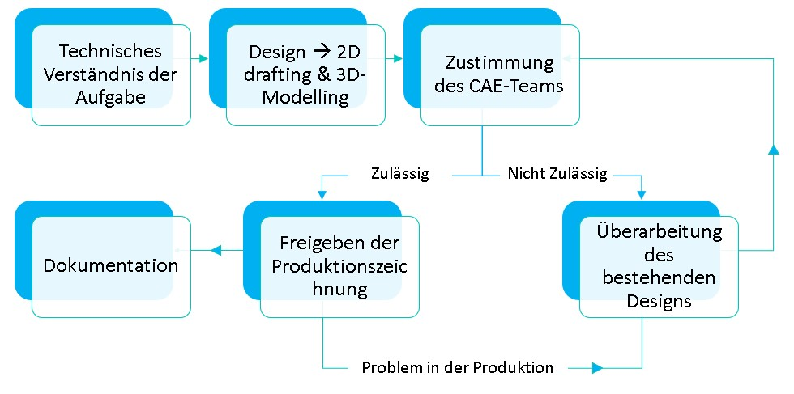

Senior Design Engineer
L&T Defense, Visakhapatnam
Aufgaben
Werkzeuge
Über das Unternehmen
Larsen & Toubro (L&T) ist ein international anerkanntes indisches multinationales Unternehmen, das sich auf High-Tech-Fertigung, Dienstleistungen und EPC-Projekte (Engineering, Procurement und Construction) spezialisiert hat. Mit Aktivitäten in mehr als 50 Ländern und einem starken Fokus auf Innovation, Qualität und Nachhaltigkeit ist L&T ein führendes Unternehmen in verschiedenen Branchen, einschließlich des Verteidigungssektors. Dank seiner umfassenden Fähigkeiten von der Planung bis zur Lieferung, erstklassigen Fertigungsstandorten in acht Ländern und einem internationalen Liefernetzwerk bietet L&T weiterhin bedeutende Lösungen, wobei Professionalität und hohe Standards der Unternehmensführung stets gewahrt bleiben.
Unternehmenslink: Larsen & Toubro